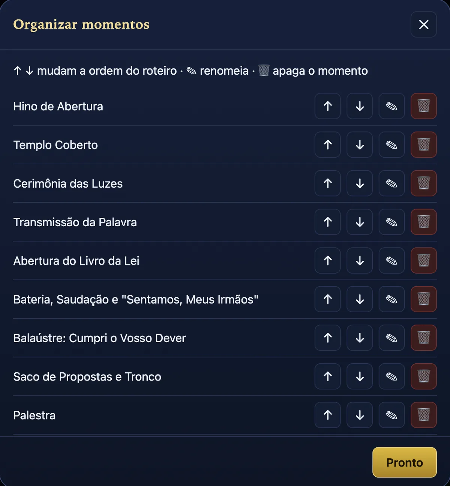

Roteiro por momento
Os passos do seu ritual, na ordem em que acontecem.
Você cria os momentos com os nomes do seu ritual e coloca em cada um as peças daquele trecho. O aplicativo já vem com doze momentos de uma sessão como ponto de partida, para renomear, reordenar ou apagar.
- Renomear e reordenar com um toque
- Momento sem peça não fura a ordem do ritual
